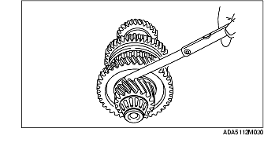

Secondary shaft components preinspection
B3E051517301101
1st Gear Thrust Clearance Inspection
1. Measure the clearance between 1st gear and the differential drive gear.

- • If it exceeds the maximum specification, inspect the contact surfaces of the 1st gear, differential drive gear of the secondary shaft gear, and 1st/2nd clutch hub component. Replace worn and damaged parts.
2nd Gear Thrust Clearance Inspection
1. Measure the clearance between 2nd gear and secondary 3rd gear.

- • If it exceeds the maximum specification, inspect the contact surfaces of the 2nd gear, secondary 3rd gear, and 1st/2nd clutch hub component. Replace worn and damaged parts.